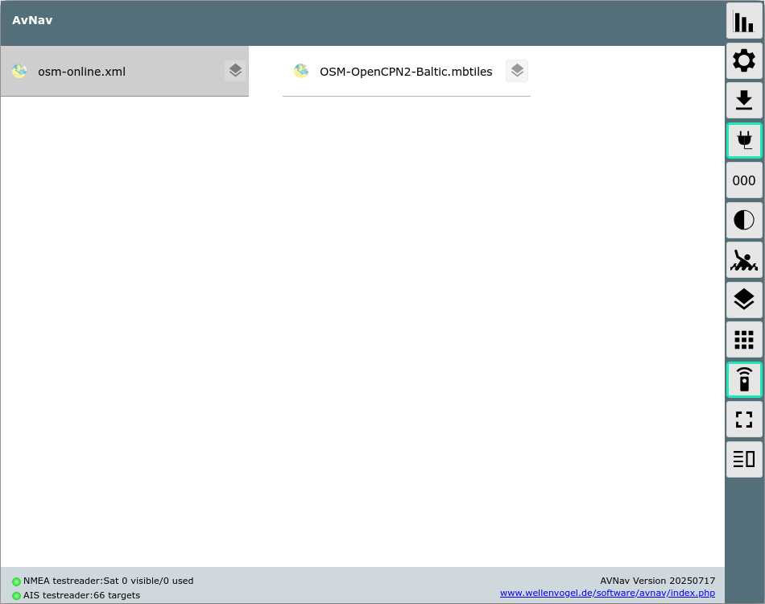
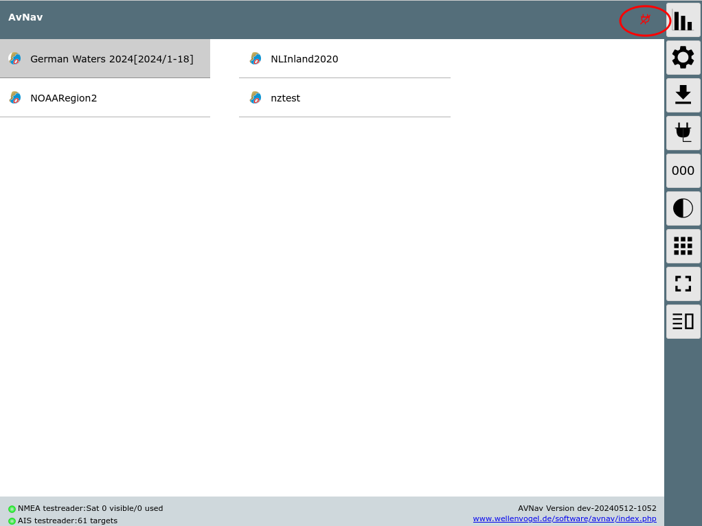
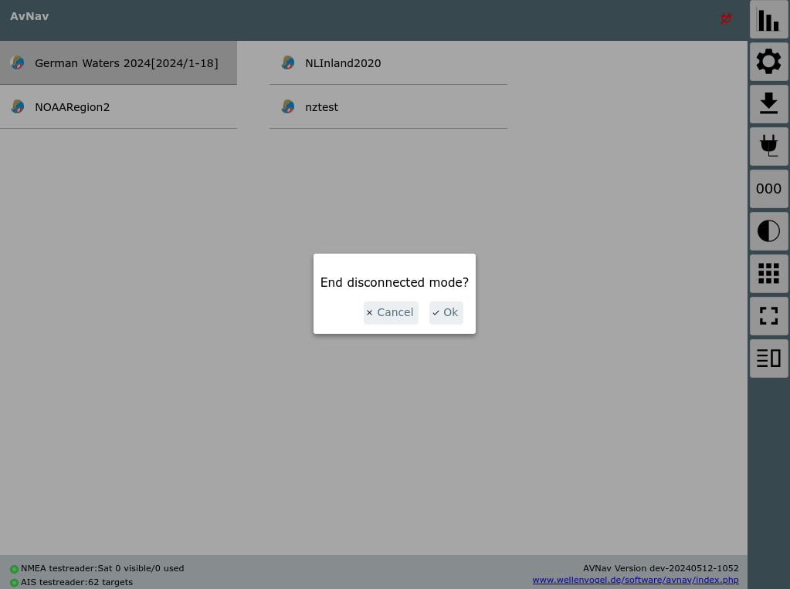
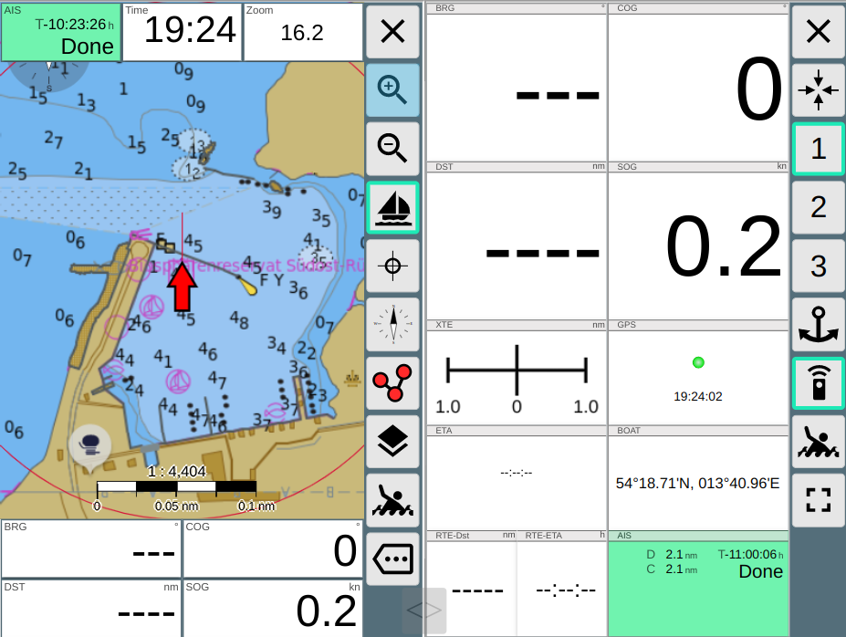

AvNav Main Page
Overview

In the page main area there is the list of charts available on the server
(files at /home/pi/avnav/data/charts on raspi, on android charts in the
choosen directory).
After first installation you will see some/one online demo charts. They
can only be used when connected to internet, of course.
You can upload further charts via the files/download
page or copy them directly into the correct directory (raspberry) or
read them from a selected directory (android).
AvNav can read charts in the gemf
format (preferred), since version 202003xx also in mbtiles
format. You can also add online chart sources using an xml definition. For
details refer to chart formats.
O-Charts need to be uploaded via the o-charts
Plugin (reachable via the  button).
button).
If you have charts installed in SignalK,
you will also see them here.
Next to each chart the  button will open the overlay
editor for this chart.
button will open the overlay
editor for this chart.
By clicking on a chart entry you will be taken to the navigation
page with the selected chart set.
Special Functions
Man over Board
Visible on all pages - but only if we are in connected mode - button  with
green border.
with
green border.
By clicking on the MOB button the current position will turn into a
dedicated waypoint named "MOB". Any active routing will be stopped and the
route to the MOB waypoint will be activated. The display will switch to
the navigation page with the last selected chart. The chart will be
centered to the boat and a fixed zoom will be applied (can be preset in
settings). Additionally a MOB alarm will be triggered. The alarm can be
stopped. The MOB routing remains active until you click the MOB button
again.

If there was no selected chart before the display will go to the dashboard
.
Night Mode
By clicking the  button
you will activate the night mode. You can fine tune the dim factors in the
settings.
button
you will activate the night mode. You can fine tune the dim factors in the
settings.

Connected/ Not Connected
With thebutton
you control how the route data is synced with the server. If it is active
(green border) all changes on routing data (waypoints, start routing, stop
routing, change route) will be synced with the server immediately. This
way they will become visible on all connected displays.
If it is switched off, all routing changes will only be stored locally.
In this mode you can e.g. try out a new route without disturbing the helms
man or the auto pilot. If you connect later on, data from server will
always take precedence. To keep your changes you need to store them e.g.
in a new route with different name. If you are activating a route that
only has been stored locally (and you are connected again) this route now
will be synced to the server. At the files/download
page the symbol next
to the routes indicates if they are synced with the server.
The connected/not connected mode only affects routing data and waypoints.
All other functions are always connected with the server (except MOB -
this is a routing function and not available when disconnected).

Since 20240520 the title bar shows a small red icon if you are in
disconnected mode. By clicking this icon you can bring up a dialog to end
the disconnected mode.

Anchor Watch
On the dashboard
page you can activate an anchor watch.
Split Mode
Since version 20220819 AvNav can split it's main window. In this mode
there are two instances of AvNav running in the same browser.

Both instances are mainly independent from each other and can be operated
separately.
They share most of the AvNav settings.
Only a couple of settings will be handled separately for each of the
instances (left/right). On the settings page
they will be marked with a *.
If you change settings (except the ones with a *) the changes will become
visible on the other instance immediately.
The following settings are specific per side:
| Name |
Meaning |
| connectedMode |
The "plug button" - if it is switched of the instance cannot make
any changes at the server. You can test a route e.g. in this mode
without influencing the server. |
| layoutName |
The layout to be used |
| remoteChannelName |
The name for the remote control channel |
| remoteChannelRead |
Read from the remote control channel |
| remoteChannelWrite |
Write to the remote control channel |
If you would like to have other/more settings to be specific per side you
can create a file splitkeys.json in the user directory. The default file
can be found at GitHub.
The names for the keys must be taken from the source
code in the properties section. All preoperties you list in the
splitkeys.json will afterwards be handled separately per side.
The settings that are specific per side will not be kept for the normal
display when leaving the split mode (but will be kept for the next split
mode entering).
Alarms will only be handled by the right instance.
Using the  Split Button on each instance you can leave the
split mode.
Split Button on each instance you can leave the
split mode.
You can drag and drop the slider to change the window split